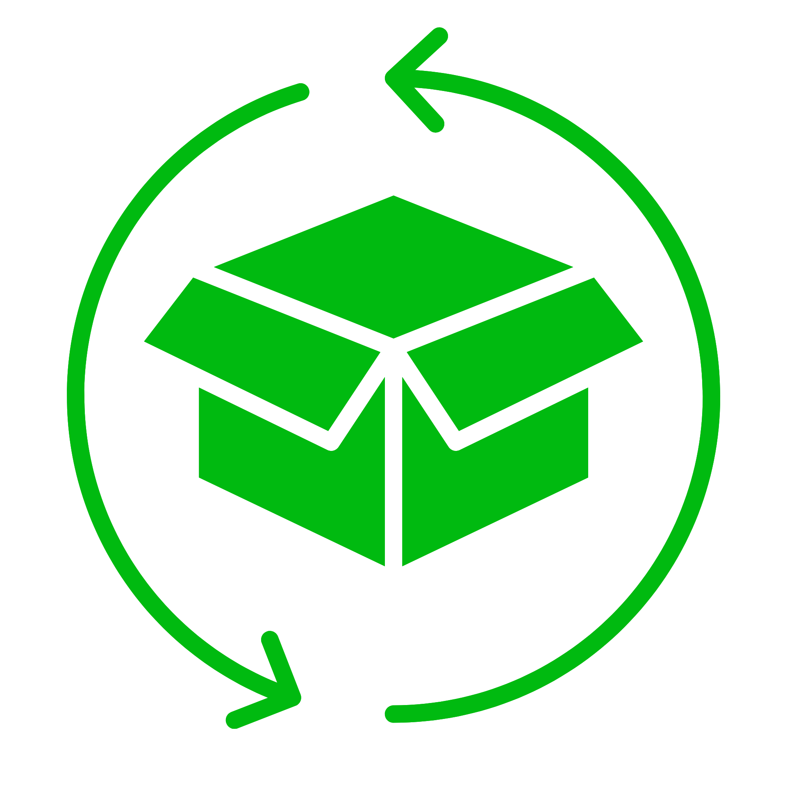

Manage crop farming efficiently. CropWise can help.
Managing your crops has never been easier. Keep track of harvest dates, quantities, seasonal categories, and more—all in one place. Whether you're a seasoned farmer or just starting out, this tool is designed to simplify your work and help you focus on what you do best: growing great crops.

Crop Inventory
Manage your crops efficiently and effectively with a crop inventory system, a powerful tool designed to streamline agricultural operations.
Harvest Management
Quickly view an overview of total crops, quantities, and harvest timelines, helping you stay on top of your agricultural operations with ease.